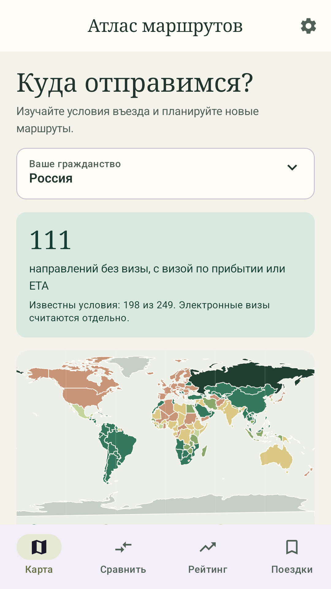
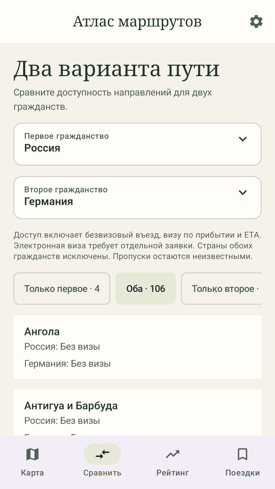
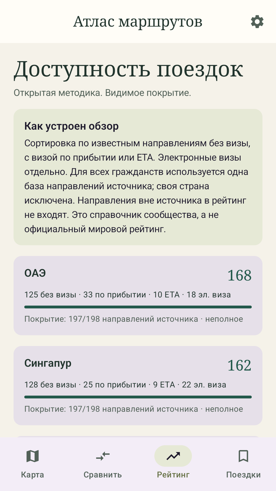
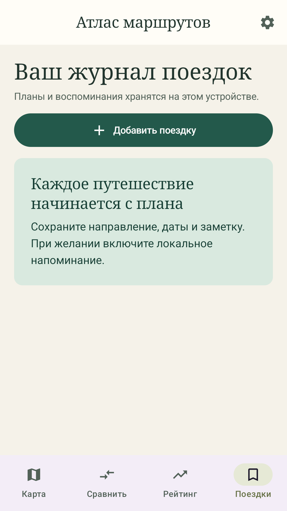
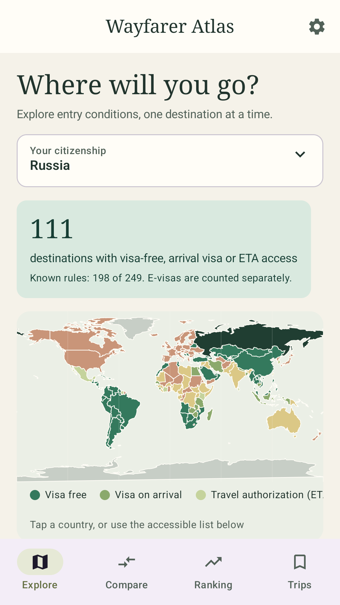
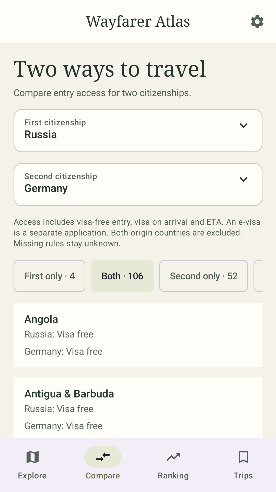
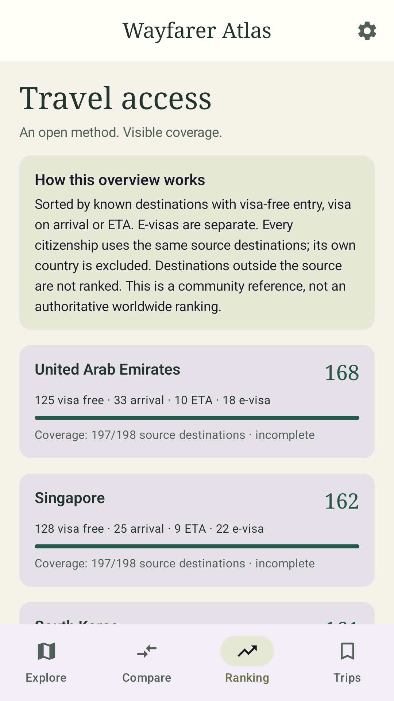
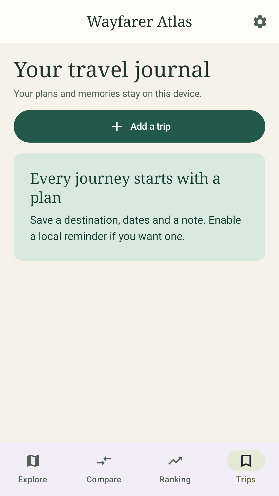

Google Play · инструкция для первого выпуска
Как выпустить «Атлас маршрутов» в Google Play
Рабочее название: Атлас маршрутов / Wayfarer Atlas. Проверка доступности бренда и имени в магазине ещё не проведена. Идентификатор: org.wayfarer.atlas — предварительный, согласовать до первой загрузки. Инструкция для первого выпуска, обновлена 26 октября 2026 года. Наличие этой инструкции не означает, что приложение уже опубликовано или аккаунт создан.
Откройте иллюстрированную версию. Она работает без интернета; ссылки на Google требуют подключения. Этапы работы в Play Console показаны схемами, а не скриншотами вашего аккаунта. Кадры приложения для карточки магазина проверяются по версии и метаданным в шаге 7; файлы хранятся в store-assets/screenshots/. Названия разделов Google могут меняться; ориентируйтесь на список незавершённых задач в Dashboard.
Пакет версии 0.1.1
Финальная сборка 0.1.1 (2) прошла Android build: JVM, lint, debug/release APK и AAB. Пройдены 106 поведенческих сценариев: 69 прежних Java, 20 новых Java и 17 Python. Gradle: 10 JVM suites / 27 JUnit tests без ошибок; wrapper-повторы отдельно к сумме не прибавляются. Android UI: 14 PASS, один необязательный инструмент съёмки SKIP; ошибок нет. Среди новых сценариев — обязательность/сохранение/повторный просмотр предупреждения и фактическое официальное условие RU→HK.
Lint debug/release: по 0 ошибок и 19 предупреждений. Подписи финальных APK/AAB, ELF/RELRO/ZIP alignment и bundletool validate прошли; хеши записаны в отчёте артефактов, проверка AAB приложена отдельно. Реальное обновление подписанной версии 0.1.0 → 0.1.1 сохранило тестовый журнал; ознакомление с предупреждением сохранилось после перезапуска. Синтетическая поездка затем удалена через интерфейс, журнал остался пустым после перезапуска. Текущие runtime-результаты и съёмка отражены в проверке 0.1.1. Результаты 0.1.0 остаются историей и не подменяют новые проверки.
На подписанной 0.1.1 успешно загружены оба общих файла: community — 26.10.2026 07:52:31 UTC, HK — 07:52:34 UTC. В настройках показаны четыре источника и дата состояния HK 2025-12-31; карточка RU→HK показывает 14 дней и официальную ссылку. Кэши, их метки времени и это условие сохранены после холодного запуска. Получение файла не означает повторной проверки всех его правил. Восемь свежих кадров RU/EN показаны в шаге 7.
| Файл пакета | Назначение |
|---|---|
| wayfarer-atlas-0.1.1.aab | Release Android App Bundle для Play Console; проверяется подпись и SHA-256 |
| wayfarer-atlas-0.1.1-release.apk | Подписанная release-версия для проверки установки |
| wayfarer-atlas-0.1.1-debug.apk | Debug-сборка для разработки; в магазин не загружать |
| wayfarer-atlas-0.1.1-source.zip | Исходники и материалы без ключей подписи |
| SHA256SUMS.txt, manifest.json | Контрольные суммы и размеры файлов пакета |
APK устанавливают на Android-устройство; AAB напрямую не устанавливают. Пакет не заменяет регистрацию Play Console, заполнение политики и требуемое тестирование. Приложение не опубликовано в Google Play.
Что потребуется от вас
- Реальная страна проживания/регистрации издателя и выбор: физическое лицо или существующая организация. Русский язык интерфейса не определяет страну издателя.
- Google-аккаунт с двухэтапной проверкой, доступ к телефону и почте; владельцу аккаунта Play Console должно быть не менее 18 лет.
- Возможность пройти проверку личности и оплатить регистрационный сбор Google. Документы и платёжные сведения вводите только на официальных страницах Google; в чат их отправлять не нужно.
- Настоящий контакт поддержки, имя издателя и постоянный HTTPS-адрес политики конфиденциальности.
- Android-телефон для проверки приложения. Для нового личного аккаунта может понадобиться проверка устройства через приложение Play Console.
- Для нового личного аккаунта — минимум 12 реальных участников закрытого теста; ниже описан срок участия.
Это бесплатное приложение для пользователя. Google указывает разовый регистрационный сбор 25 долларов США за аккаунт разработчика; его оплачивает издатель, бесплатные API его не отменяют. Сумму в форме, валюту, доступность и способ оплаты проверьте до оплаты: допустимые карты зависят от страны, предоплаченные карты не принимаются. Официальная регистрационная инструкция. Разработчик не создаёт аккаунт и не оплачивает сбор за вас.
1. Проверьте, можно ли зарегистрироваться из вашей страны
Откройте список поддерживаемых стран для разработчиков. Проверьте столбец регистрации разработчика для своей реальной страны. Регистрация продавца — отдельный вопрос; покупок и подписок в этом приложении нет.
Если ваша страна отсутствует либо регистрация/оплата недоступна, остановитесь на этом шаге и уточните у поддержки Google доступный официальный вариант. Не выбирайте фиктивную страну, адрес, организацию или чужие документы. Для России отдельно проверьте актуальную информацию Google об ограничениях; язык приложения не даёт оснований считать, что вы регистрируетесь из России.
Результат: вы знаете, поддерживается ли регистрация именно для вашего издателя. Этот пункт требует вашего ответа; разработка приложения может продолжаться параллельно.
2. Выберите тип аккаунта и зарегистрируйтесь
Откройте официальную регистрацию Play Console и справку о создании аккаунта.
Выберите Personal / Личный, если выпускаете приложение от себя. Если издатель — действующая организация, выберите Organization / Организация. Google требует D‑U‑N‑S для проверки большинства организаций; для предусмотренных Google исключений следуйте форме. Не создавайте организацию только ради обхода тестирования. Выбор типа аккаунта.
Введите реальные сведения, прочитайте условия и проверьте, какие из них будут видны пользователям. Оплатите сбор после проверки суммы на экране. Сохраните квитанцию у себя. Завершите проверку личности и контактных данных по заданиям Dashboard; Google может запросить документы. Подробности: проверка аккаунта.
Результат: Dashboard показывает завершённую регистрацию. Мы не создавали аккаунт, не платили и не проходили проверку за вас.
3. Выполните проверку Android-устройства, если Google её запросит
В Dashboard найдите задание проверки устройства. Откройте его и следуйте QR-коду/ссылке на официальное приложение Google Play Console. Войдите тем же аккаунтом владельца и завершите проверку на физическом Android-телефоне без root-доступа, с Android 10 или новее. Эмулятор для этого этапа не заменяет реальный телефон.
Не путайте эту проверку с тестированием самого приложения. Эти требования подтверждены инструкцией Google 25.10.2026; перед покупкой телефона сверьтесь с текущей страницей. Совместимость вашего конкретного телефона ещё нужно проверить.
Результат: задание проверки устройства завершено либо не требуется вашему аккаунту.
4. Зафиксируйте имя пакета и подготовьте подписанный AAB
В проекте используется рабочий пакет org.wayfarer.atlas. До первой загрузки проверьте, устраивает ли вас этот идентификатор: после загрузки имя пакета нельзя сменить у того же приложения. Если нужно другое имя, разработчик заменит его во всём проекте до загрузки. Имя пакета — постоянный технический идентификатор приложения. Отображаемое название магазина можно менять отдельно. Создание и настройка приложения.
Конфигурация выпуска: versionName 0.1.1, versionCode 2, Android 8.0 / API 26 и выше; target/compile API 36. С 31 августа 2026 года новые приложения и обновления для обычных Android-устройств должны иметь target Android 16 / API 36 или выше. Требование Google.
Для Google Play нужен release AAB, подписанный ключом загрузки. APK пригоден для установки и проверки, но не заменяет релизный Android App Bundle нового приложения в магазине. Разработчик должен передать AAB, номер версии и результаты проверки. Не загружайте debug APK или артефакт с тестовыми данными.
Включите Play App Signing. Google хранит ключ подписи приложения; отдельный ключ загрузки используется для отправки новых версий. Локальный ключ загрузки уже создан в закрытом, исключённом из Git каталоге release-private/. Не пересоздавайте его. Владелец сохраняет защищённую резервную копию всего каталога, включая файл настроек подписи; содержимое каталога не отправляется в чат, Git или публичное облачное хранилище. Для подписанной сборки разработчик выполняет из папки приложения:
python3 scripts/with-signing.py bash scripts/gradle.sh bundleReleaseСкрипт передаёт настройки подписи дочернему процессу и не печатает секреты. Наличие ключа не доказывает успешную сборку: перед загрузкой нужен новый AAB, проверка подписи и SHA-256. Для новой версии APK/AAB заново собираются с тем же upload key. Итоговые подпись AAB, хеши и установка именно передаваемой версии должны совпадать с журналом проверки. Если владелец решит использовать другой ключ, это нужно сделать до первой загрузки и затем заново собрать AAB. Следующие обновления сохраняют имя пакета и увеличивают versionCode. Подпись приложения, Android App Bundle.
Результат: есть проверенный подписанный AAB. Отсутствие ключа/подписанного артефакта — блокер загрузки, а не повод выдавать debug-сборку за релиз.
5. Создайте приложение в Play Console
Нажмите Create app / Создать приложение. Введите рабочее название, выберите основной язык, тип App / Приложение и Free / Бесплатно. Примите требуемые декларации после прочтения. Затем добавьте русскую и английскую локализации карточки магазина.
Бесплатная модель соответствует продукту: нет аккаунтов, рекламы, встроенных покупок, подписок или платной разблокировки. Не добавляйте эти функции в декларации. Список экранов, которые нужно заполнить, появится в Dashboard. Официальная инструкция.
Результат: в Console есть черновик приложения; пользователи пока его не видят.
6. Опубликуйте политику конфиденциальности по HTTPS
В проекте есть двуязычный черновик. Перед публикацией заполните имя/наименование издателя и контакт поддержки. В черновике указаны два хоста обновлений: raw.githubusercontent.com (GitHub) и www.immd.gov.hk (Immigration Department Hong Kong). Их официальные политики приведены в тексте; сверьте описание с фактической release-сборкой. Поле «дата вступления» заполните датой размещения окончательной политики.
Разместите файл как обычную общедоступную HTML-страницу на постоянном HTTPS-адресе: например, на своём сайте или доступном вам статическом хостинге. Откройте ссылку в приватном окне без входа. Страница должна читаться без разрешения на доступ и без скачивания PDF. Добавьте один и тот же URL в Play Console и в приложение. Требования к политике и пользовательским данным.
Результат: доступный публичный URL. Файл на ноутбуке и локальный file:// адрес не подходят. Пока поля издателя/контакта не заполнены и страница не размещена, публикация заблокирована.
7. Заполните карточку магазина на двух языках
Возьмите тексты из store-listing.md. Добавьте email поддержки. Выберите подходящую категорию, например Travel & Local / Путешествия, если она соответствует фактической версии.
В версии 0.1.1 объединены четыре источника: 38 822 уникальные пары, 213 гражданств и 199 направлений источников. Community-основа из 38 612 пар дополнена отдельными официальными сведениями; размеры наборов не складываются напрямую из-за пересекающихся пар. HK CSV содержит 207 сопоставленных гражданств (203 известных условия); 60 новозеландских визовых исключений с NZeTA и одна проверенная поездка Россия — Макао поставляются со сборкой. Неоднозначные условия остаются UNKNOWN. Наличие отдельных официальных сведений не делает весь набор официальной актуальной базой.
Кнопка обновляет community JSON и HK CSV. NZ/MO обновляются с версиями приложения. HK CSV помечен As at 31 December 2025, его справочная HTML-страница пересмотрена 22.09.2026; проверка источника 26.10.2026 не подменяет эти даты. Для community-основы действуют версия 2026-08-11, дата среза 2026-08-10 и только 38 индивидуальных дат проверки. Источники и лицензии.
При первом запуске приложение требует ознакомиться с предупреждением: данные могут быть неполными, неточными или устаревшими; перед покупкой билетов, подачей заявлений и каждой поездкой нужно проверять действующие требования в официальной иммиграционной службе или консульстве страны назначения. Отметка ознакомления сохраняется локально; предупреждение можно открыть снова в настройках. Этот экран не является подтверждением правильности выбранного условия или гарантией въезда.
Иконка 512×512, feature graphic 1024×500 RU/EN и восемь настоящих кадров 0.1.1 подготовлены. Схемы инструкции нельзя использовать как скриншоты приложения в Google Play. Не обещайте въезд без проверки. Требования Google к графике.
| Материал | Обязательный формат |
|---|---|
| Иконка магазина | 512×512 px, 32-bit PNG с alpha, до 1024 KB |
| Feature graphic | 1024×500 px, JPEG или 24-bit PNG без alpha |
| Скриншоты | Минимум 2; JPEG/24-bit PNG без alpha; стороны 320–3840 px, длинная не больше 2× короткой |
| Рекомендуемый набор | 4–6 реальных кадров на язык, например 1080×1920; карта, сравнение, рейтинг, поездки/напоминание, справочник |
Результат: русская и английская карточки описывают реальные экраны и имеют готовые иллюстрации. Видео для первого выпуска можно не добавлять.
Реальные экраны приложения
Снята настоящая MainActivity версии 0.1.1 (2) на Android ATD arm64 / API 36, 26.10.2026 в 07:54:25 UTC. Каждый PNG — 1080×1920, 24-bit RGB без alpha; после экспорта все RGB-пиксели совпали с оригиналом. Использованы справочные данные приложения, журнал пустой. Версия, устройство и метод указаны в метаданных, размеры и контрольные суммы — в manifest SHA-256. Нажмите на кадр, чтобы открыть полный размер. Схемы Console остаются отдельными иллюстрациями.
Русский интерфейс








English interface








8. Заполните App content и Data safety по фактической сборке
В Policy and programs → App content / Содержание приложения заполните требуемые анкеты. Названия пунктов и их наличие могут отличаться для аккаунта. Подготовка к проверке.
| Пункт Console | Ответ/действие для этой версии |
|---|---|
| App access / Доступ | Все функции доступны без входа. Логин/тестовый аккаунт не нужны. |
| Ads / Реклама | Нет рекламы. Проверить, что в release нет рекламного SDK. |
| Content rating / Возрастной рейтинг | Честно пройти IARC-анкету; итоговый рейтинг назначает система, заранее его не выдумывать. |
| Target audience / Аудитория | Выбрать фактическую аудиторию; не отмечать детскую аудиторию ради расширения охвата. |
| Account deletion / Удаление аккаунта | Аккаунты не создаются; требование удаления аккаунта не применяется. Удаление локальных поездок остаётся функцией приложения. |
| Data safety | Сверить release, SDK и реальные сетевые запросы, затем заполнить анкету. |
| Дополнительные декларации | Отвечать по функциям; приложение не является государственным или официальным миграционным сервисом. |
Проверка Data safety — обязательный отдельный этап. Ни отсутствие регистрации, ни локальная база сами по себе не означают «приложение ничего не собирает». Выбор страны/гражданства, поездки и напоминания должны оставаться на устройстве. При нажатии «Обновить справочник» приложение скачивает общий community JSON около 2,93 MB с raw.githubusercontent.com и официальный HK CSV около 19,5 KB с www.immd.gov.hk. Запрос не включает гражданство, поездки, заметки, аккаунт, API-ключ или постоянный идентификатор устройства; сервер/CDN всё равно видит техническое соединение и IP-адрес. Проверьте, сохраняет ли хост эти данные, для чего, на какой срок, и передаются ли ещё заголовки/идентификаторы. От этого, правил сервиса и определений Google зависит декларация. Определения и анкета Data safety.
Используйте подготовленные ответы Data safety: в них заполнены рекомендации по локальным данным, HTTPS, аккаунтам, рекламе и отсутствующим категориям. Отдельно оставлено узкое решение о классификации технических соединений внешних операторов; фиксированный срок логов и обработка только в памяти оператором не подтверждены. Для новой версии отдельно проверяются оба обновляемых источника; packet capture не заявляется.
Результат: декларации соответствуют коду, сетевому поведению и политике. Шаблон не подменяет проверку фактического AAB.
9. Загрузите сборку во внутренний тест
Откройте Test and release → Testing → Internal testing / Внутреннее тестирование. Создайте релиз, загрузите подписанный AAB и дождитесь проверки файла. Прочитайте предупреждения, добавьте краткие release notes на русском и английском. Добавьте свой Google-аккаунт в тестировщики, сохраните список и откройте ссылку подключения к тесту на телефоне.
Если на телефоне уже установлена тестовая APK-сборка и Android сообщает о конфликте подписей, сначала сохраните нужные сведения о поездках вручную: удаление тестового приложения удалит весь локальный журнал. Затем удалите конфликтующую тестовую сборку и установите вариант Google Play. Между разными подписями Android не обновляет одно приложение поверх другого.
Установите приложение через Google Play. Проверьте обязательное предупреждение первого запуска, сохранение ознакомления после перезапуска и повторный просмотр в настройках. Затем проверьте работу без входа, русский и английский языки, карту, сравнение, рейтинг, происхождение правил, создание/редактирование/удаление поездки, отказ/разрешение уведомлений и обновление данных. Повторите ключевые действия без интернета. Проверьте свежую установку и обновление поверх предыдущей версии. Напоминание планируется на 09:00 дня начала поездки по часовому поясу устройства при сохранении; Android/WorkManager может отложить его. Проверьте, что после изменения и удаления поездки не остаются старые уведомления, а при отказе в разрешении справочные функции работают. Отдельно проверьте Google pre-launch report и устраните ошибки.
Внутренний тест удобен для первой проверки, но не засчитывается вместо обязательного закрытого теста нового личного аккаунта. Настройка тестирования.
Результат: реальная установка из Google Play проверена; критических ошибок нет.
10. Проведите закрытый тест, если он требуется аккаунту
Для личных аккаунтов, созданных после 13 ноября 2023 года, Google требует не менее 12 участников, непрерывно подключённых к закрытому тесту минимум 14 дней. Затем можно подать заявку на доступ к production; это ещё не публикация. Если участник выйдет и вернётся, его непрерывный срок начинается заново. Действующее требование Google.
Откройте Testing → Closed testing / Закрытое тестирование, создайте трек, добавьте список email или Google Group и загрузите проверенный AAB. Выберите страны тестирования. Передайте участникам ссылку подключения: добавления email недостаточно, каждый должен сам принять участие своим Google-аккаунтом и установить приложение. Набор реальных тестировщиков и отправка приглашений — действие владельца; автоматических приглашений этот проект не отправляет.
Дайте участникам сценарии: сравнить две страны, открыть источник правила, добавить поездку, проверить напоминание, включить второй язык, обновить справочник. Собирайте замечания и фиксируйте исправления. Проверяйте счётчик в Dashboard. Планируйте запас участников; не заменяйте реальную проверку покупкой формальных подключений.
Результат: Console подтверждает достижение порога, а журнал теста содержит реальную обратную связь.
11. Запросите доступ к production
Когда Dashboard разрешит, нажмите Apply for production access / Подать заявку. Опишите, кто тестировал приложение, как собирались отзывы, какие ошибки исправлены и почему версия готова. Используйте реальные сведения из test-log-template.md. Не утверждайте, что тест завершён, только потому что прошло две недели с загрузки AAB.
Google рассматривает заявку и может запросить дополнительное тестирование. Проверяйте Console и почту владельца. Доступ к production и одобрение конкретного релиза — разные этапы. Объяснение процесса.
Результат: production доступен либо Google указал, что нужно исправить/дотестировать. Срок одобрения не гарантируется.
12. Подготовьте и отправьте production-релиз
Проверьте release-checklist.ru.md. В Production создайте релиз из прошедшего тестирование AAB либо загрузите новую проверенную версию с большим versionCode. Выберите страны распространения отдельно от страны издателя. Проверьте бесплатную модель, локализации, поддержку, политику и декларации.
Откройте Publishing overview / Обзор публикации. Если хотите сами выбрать момент выхода после одобрения, заранее настройте Managed publishing / Управляемую публикацию, если она доступна для этого этапа; сверьтесь с текущей Console. Нажмите отправку на проверку, прочитав итоговый список изменений. Обзор публикации.
Проверьте результат модерации. При отклонении исправьте указанный пункт и повторно отправьте; не создавайте копию приложения ради обхода решения. После одобрения выполните финальную публикацию, если она ожидает вашего подтверждения. Убедитесь, что публичная страница открывается и приложение устанавливается в выбранной стране.
Результат: приложение доступно в Google Play. До этого корректный статус — «подготовлено к загрузке/тестированию», а не «выпущено».
Кто что делает
| Работа | Исполнитель |
|---|---|
| Код, проверка функций, инструкции, шаблоны карточки и политики | Разработчик |
| Страна, юридические сведения, Google-аккаунт, документы, оплата | Владелец |
| Ключ загрузки и его хранение | Локальный ключ создан разработчиком; владелец сохраняет защищённую копию всего release-private/, секреты вне чата/Git |
| HTTPS-хост политики и подтверждение правил сервера справочников | Владелец/оператор выбранного хоста |
| Набор тестировщиков, личное подключение участников, отзывы | Владелец и участники |
| Проверка Console, решение о выходе, окончательная публикация | Владелец |
Проверка источников
Официальные контрольные источники: закрытый тест 12/14, графика, типы аккаунта/D‑U‑N‑S, регистрация, проверка устройства и target API. Инструкция обновлена 26.10.2026. 25.10.2026 прочитаны официальные страницы регистрации (возраст 18+, разовый сбор 25 USD) и проверки устройства (физический Android 10+, без root). Перед оплатой и подачей используйте текущую форму Console и справку. Страна издателя, способ оплаты и совместимость его телефона определяются по реальным сведениям владельца.